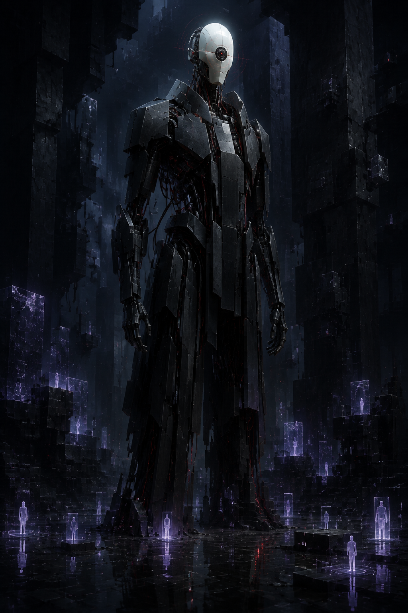
01 — 基线审计者
建筑式的执法者
“一具黑色的安保躯体，一张为聆听而生的面孔。”
最有力量的起始体态语言：狭窄的硬表面轮廓、瓷面具血统、裸露的线缆，以及足以在「柱脊」关卡中被清晰读取的物理结构。
中途城（Midway）的企业把最牢不可破的资产撤出网络，藏进活人的大脑。「黑色审计」让一支队伍经由黑市神经链路，去抢劫一颗已学会像城市级数据中心一样自卫的心灵。
在「合规圣物匣」内部，服务器机架如记忆中的办公楼般拔地而起，光纤脉络穿行于几何上不可能存在的走廊。数据在这里不是躺在冷存储里——它用企业语言做梦。它的安全协议披着记忆中的权威面孔：审计者。
一尊悬浮的企业神经安全圣者，巡行于一颗被窃心灵的隐秘架构之中——当寂静被打破，它便追猎扰动之源。
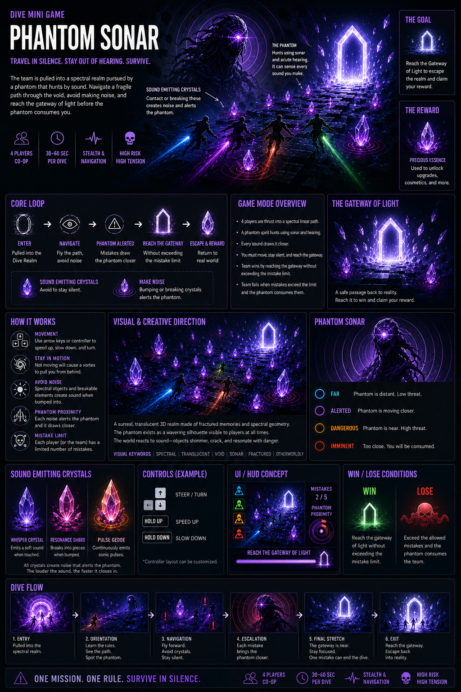
在《狼穴》中，关键数据存储于人类心智之中，因为 AI 无法渗透。深潜（Dive）就是对这种生物秘库的入侵：这里正适合一种半是数据系统、半是潜意识记忆的防御智能。
深潜本身就是一个不稳定的异位心理空间。「幻影」提案加入了共享噪声系统与固定巡逻路线；审计者则将两者都化为叙事。它不只是敌方 AI——它是正在聆听入侵的心智安全架构。
“中途城的每一个秘密都有看守者。这一个，学会了凭聆听狩猎。”
五条早期视觉路线，保留为一份简明的决策记录。它们界定了领域；随后确定的审计者方向才是获批的聚焦方向。

“一具黑色的安保躯体，一张为聆听而生的面孔。”
最有力量的起始体态语言：狭窄的硬表面轮廓、瓷面具血统、裸露的线缆，以及足以在「柱脊」关卡中被清晰读取的物理结构。
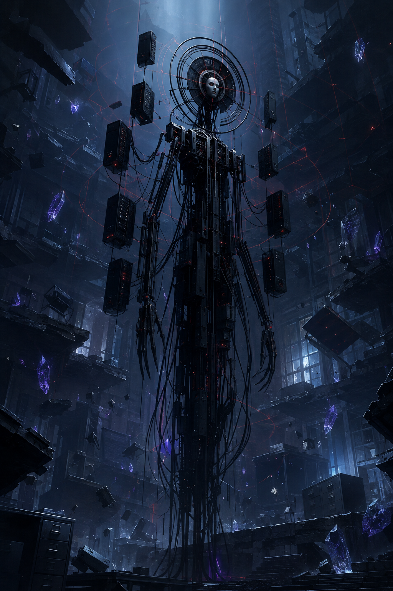
“一座布置如禁忌圣物匣的移动金库。”
它引入了沿用至今的核心构想：服务器机架、诊断环与悬垂线缆被重组为圣者般的光环——不是宗教，而是围绕受保护数据的企业仪式。
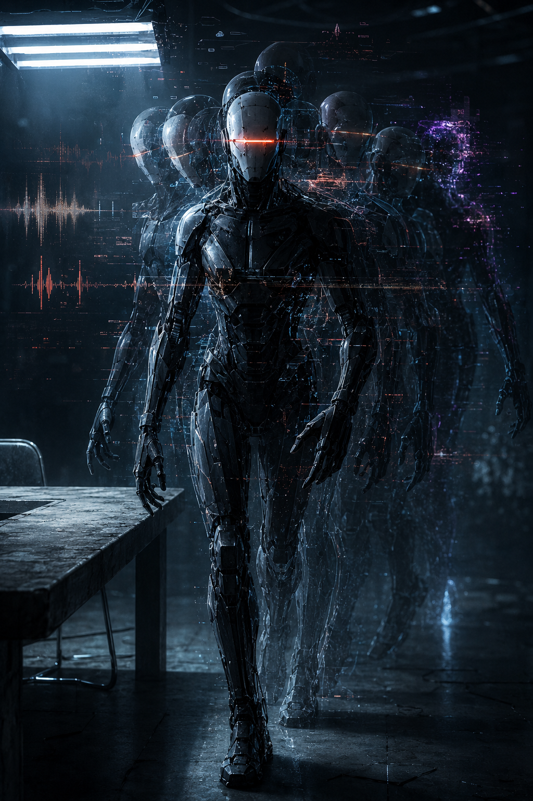
“你先听见它，它才抵达——而早于你看见它。”
为警觉与追猎状态找到的正确视觉答案。时间偏移的回声将它的滑行路线转化为可感知的威胁，同时保留「它从不奔跑」的规则。
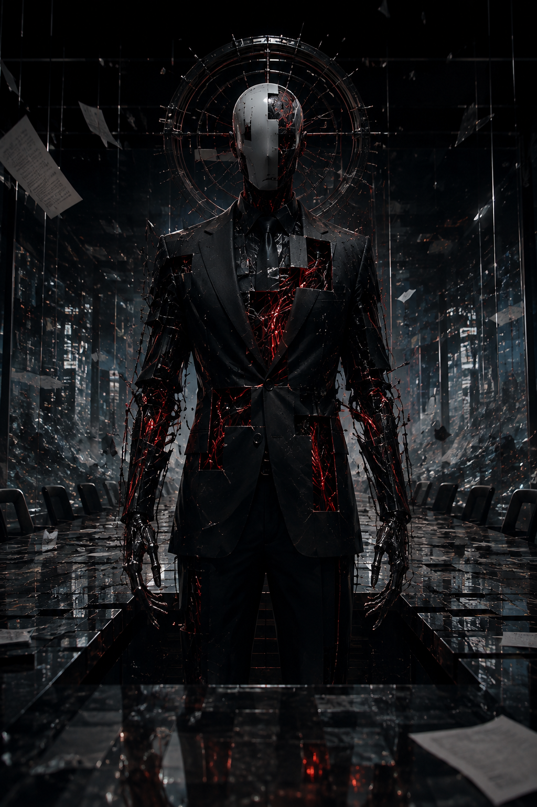
“公司留下了权威，丢弃了身份。”
它提供了关键的设定层：正装碎片与被涂黑的人格。它必须始终保持为受损的证据，绝不能变成一个穿西装的字面意义上的反派。
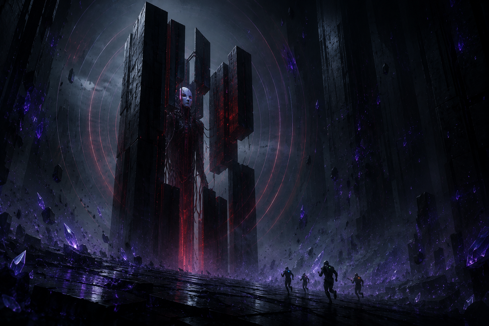
“每到一处路点，房间仿佛随它一同屏息。”
最初是一个伪装构想，后精炼为巡逻行为。在路线节点，它的装甲板与光环会锁定进周遭的粗野主义几何之中，逐一扫描每个壁龛。
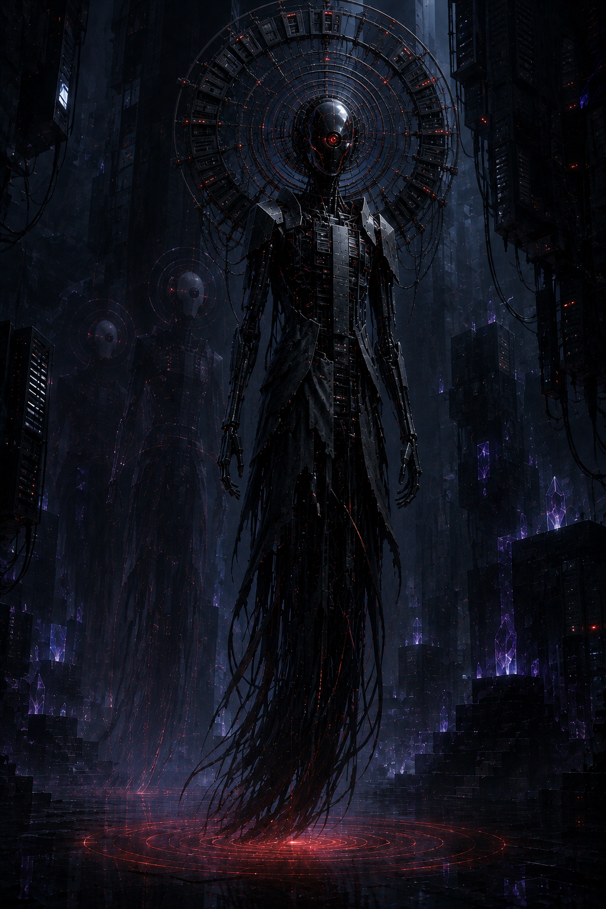
“光环不是装饰。它是被显形的安全系统。”
最终方向将光环从点缀提升为标志：一个放大约 50% 的移动阵列，由服务器刀片、天线环、数据端口与相连光纤构成。
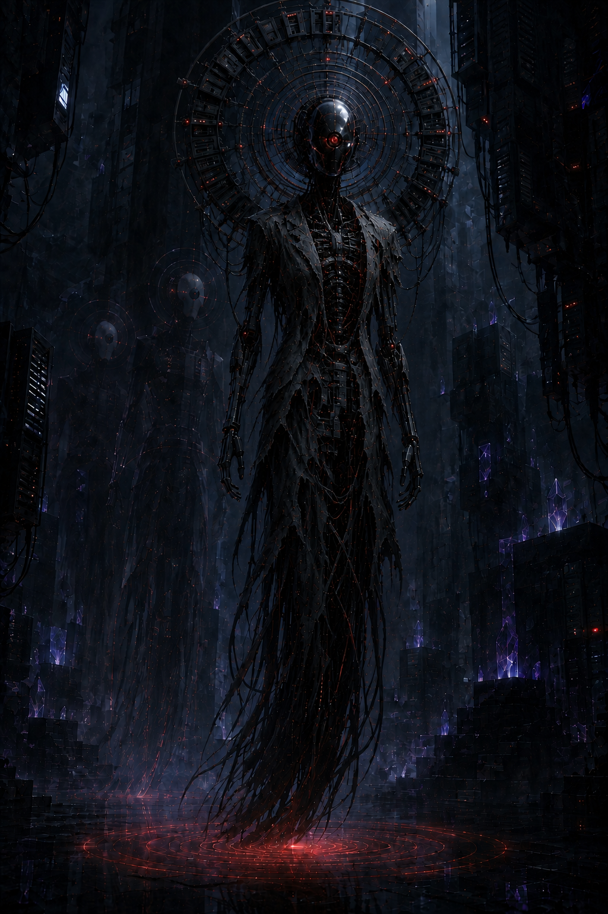
审计者是一个自适应安全构装体，诞生于企业生物秘库协议与宿主心智中权威记忆的交汇处。它残破的西装外壳是一段被记住的人类历史；服务器脊柱与光环则是如今占有它的系统。
以恒速沿固定的柱脊环线滑行。光环稳定；声呐孔近乎全黑。行至壁龛开口处，面具会转向，一道低沉的扫描脉冲丈量整个房间。
噪声迫使它脱离路线。服务器模块亮起诊断红光，光环悄然朝扰动方向重新定向。它只滑行——绝不冲刺。
短促而无摩擦的滑行爆发扑向最新的声响。延迟的回声残影留在它原本的路径上。一旦信号丢失，它便回到环线。
一座被重构为不可能之数据中心大教堂的企业神经档案馆：一场记忆模糊的噩梦，却仍遵循生物秘库的硬性建筑架构。
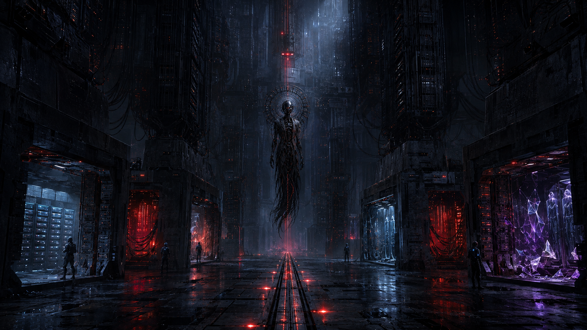
这次深潜属于一位企业连续性事务官：一种人类神经模式，携带着并购证据、高管访问密钥与被压下的企业罪行。审计者体内撕裂的西装碎片是这个人最后的证据；数据中心圣者则是吞噬了他们的安全系统。
审计者从不需要变成一根柱子。柱子反而会截住虚假的扫描反射与延迟的光环回波，在保持不确定感的同时，让 Boss 的视觉形象足够标志性。
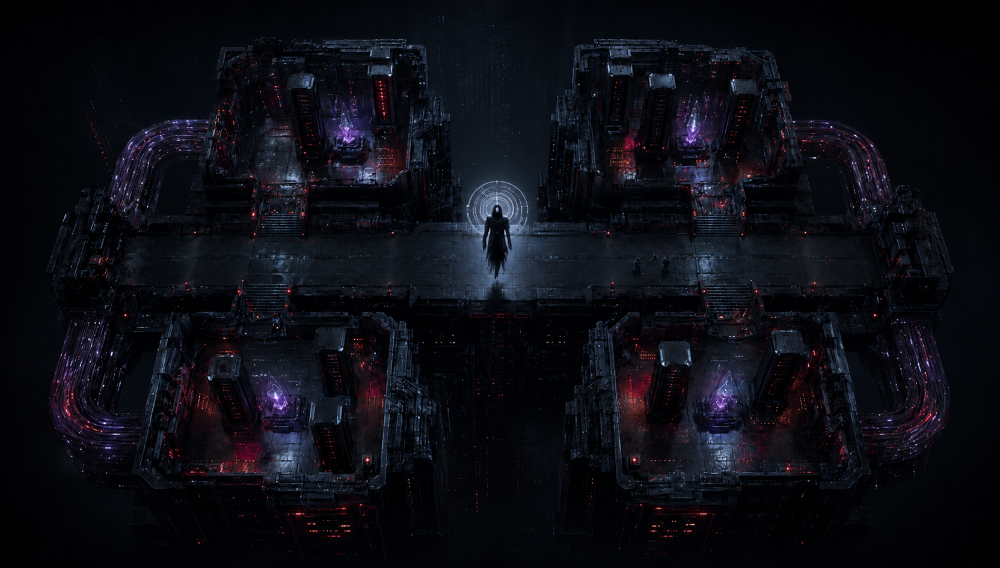
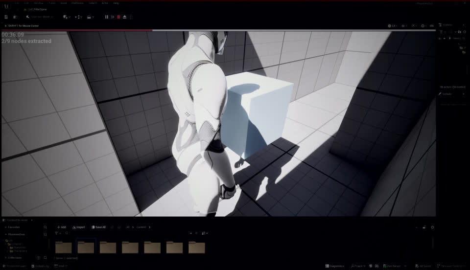
对提供的 Unreal 灰盒场景做了非破坏性处理：冷蓝黑调色、降饱和、一道红色诊断扫光与暗角。它确立了这个世界噩梦式科技惊悚的氛围，同时不会误导人以为灰盒墙体就是最终环境美术。
量产替换路径：灰盒墙体模块 → 服务器巨塔套件；后部走廊 → 光纤交汇套件；蓝色方块 → 内嵌记忆节点机架块；巡逻体积 → 自发光红色神经轨道与光环反射探针。
“这座档案库为保存真相而建。其中的心智，则为在知晓真相后活下去而建。”
现在直接展示录制的原型路线，而不再抽象成一条红色路径。它仍是巡逻的基准参考：审计者沿外侧壁龛环线滑行；中央审计通道保持为玩家横穿与调查区。
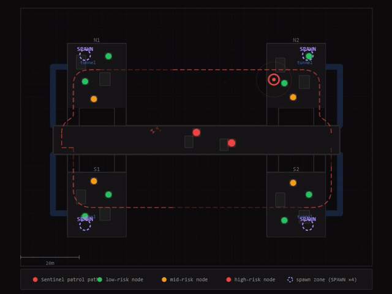
录制的原型轨迹：请将这段循环片段用作巡逻时序与空间推进的动作参考。审计者只会为调查一起噪声事件而离开环线，随后在最近的外围汇合点重新加入。
它的萦绕感来自宿主心智对神经安全的视觉化解读。每一个主要形态都有技术成因。
它制造路线压力、时机窗口、共享噪声下的决策与协同撤离。这场遭遇战的武器是距离。
破损的企业西装、黑曜石审计面具与巨大的数据中心光环，赋予这位看守者一种刻意塑造、独属于中途城的身份。
“系统还记得权威的模样。如今，它用这份记忆抹除入侵者。”
四名玩家以投影入侵者的身份潜入一座被窃的生物秘库。回收目标的记忆节点，让共享噪声表保持在崩溃线以下，并在审计者完成矫正之前回切（Snap Back）。
通过接入碎片，投影进入这座企业神经档案馆。
在四个随机分配的见证锚点处显形。
在服务器圣物匣中找到 6–9 个活跃的记忆节点。
保持静止，把一条记录转化为随身携带的神经数据。
每个动作都会累积小队的共享噪声特征。
锁定回收的证据，回到现实中的劫案。
同一套环语言告诉玩家：圣物匣是在读取他们，还是他们正在逃离。红色圆环随审计者收集证据而收拢；冷白色圆环在小队断开神经链路时向外逆转。
在场景中，合规环属于审计者。HUD 会精确镜像它的状态——玩家看得见光环时可以直接读光环，看不见时就读圆环。
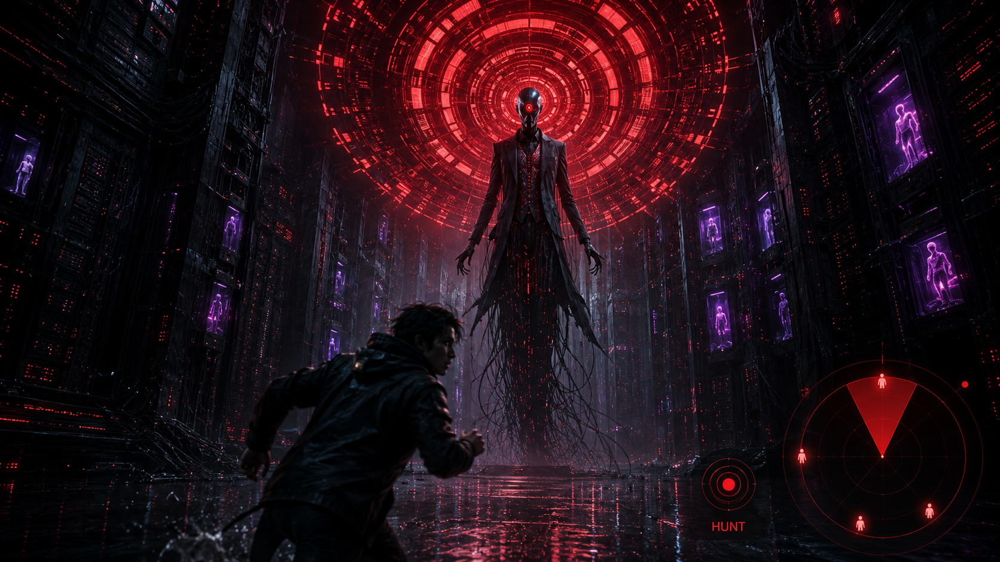
不完整的紫色圆环。档案库尚未对入侵归类。
分段琥珀色圆环把分散的声响拼装成证据。
红色取证环对入侵者归类，并将其深潜投影移出索引。
白蓝色圆环逆向汇入返回孔径：被窃的记录赶在被重新索引之前离开。
2.0 m/s 的安静移动。规划好路线，让档案库逐渐散去你们小队的噪声。
+0.5% / 秒6.5 m/s 的加速奔跑。它能跑赢追猎，却把逃亡变成一次响亮的宣告。
+8% / 秒光纤捷径与碰撞是响亮的环境事件：会打断巡逻节奏，并引来审计者前往调查。
+10 / +8原地站立即是暴露。提取进度全队共享，队友需要抽身时可以接力。
+2% / 秒完全静止两秒后，计量表开始以 −3%/秒 恢复。分散行动；绝不要聚成一个显眼的声源团。
恢复冷蓝色的圣物匣。固定审计环线；听觉 8 米；2.0 m/s 滑行。
红色渗入建筑结构。路线变得不稳定；听觉 12 米；3.5 m/s 滑行。
矫正状态。审计者追踪最近的声响：听觉 20 米，5.5 m/s，可执行捕获。
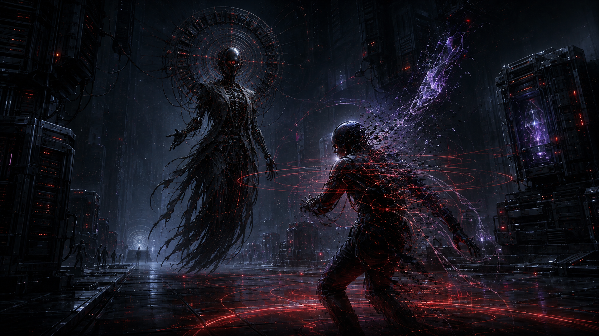
光环对入侵者的噪声特征进行三角定位，施加红色矫正环，并将深潜投影移出索引，分解为黑色数据碎片与神经纤维。生物秘库之外的现实队友仍然存活。
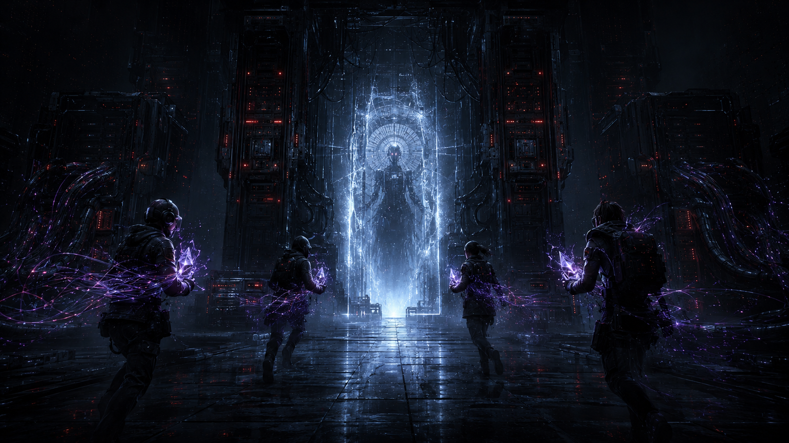
紫色记录是随身携带的记忆节点，不是魔法水晶。冰冷的孔径是一次干净闭合的神经连接：小队要赶在审计者重新索引失窃证据之前回切。
全部节点回收。情报激活，价值获得 ×1.5 加成，加密真相推动下一条剧情线。
已完成的记录正常结算。小队带回部分情报与正常的价值产出。
安全系统将小队弹出。不保留任何记录，但主线任务继续——这是可选增益，绝不是阻碍。
计时在成功交接前耗尽。团队返回时没有任何深潜收益，也不会受到外部惩罚。
HUD 上显示敌方巡逻路线；现实劫案中揭示隐藏路径。
压缩的财务或访问记忆，转化为可叠加的任务报酬价值。
高风险的认知证据推动剧情线，并具有更高的奖励转化率。
10 Chambers 的官方材料确立了核心前提：2097 年，关键数据保存在人类心智之中；深潜即是进入这些神经生物秘库提取加密情报。官方报道还描述深潜空间是几何上不可能的、合作式的异现实序列。这些是审计者的创意基础——而非未经证实的粉丝设定。
10 Chambers — 十周年特辑：《劫掠人脑，揭秘深潜》
《狼穴》官方 — 试玩首发印象报道
《狼穴》官方 — 中途城（Midway）背景设定